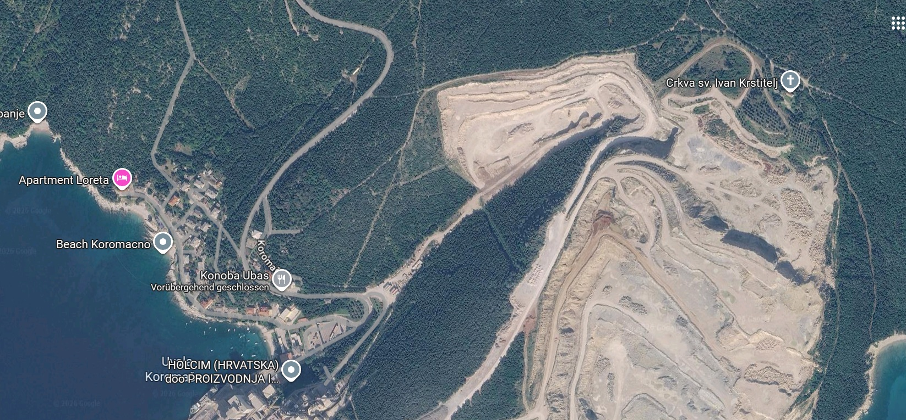
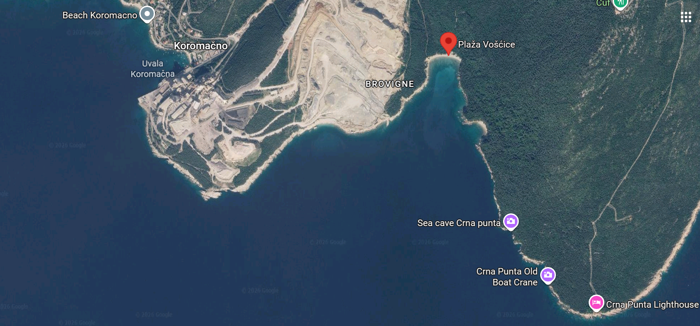
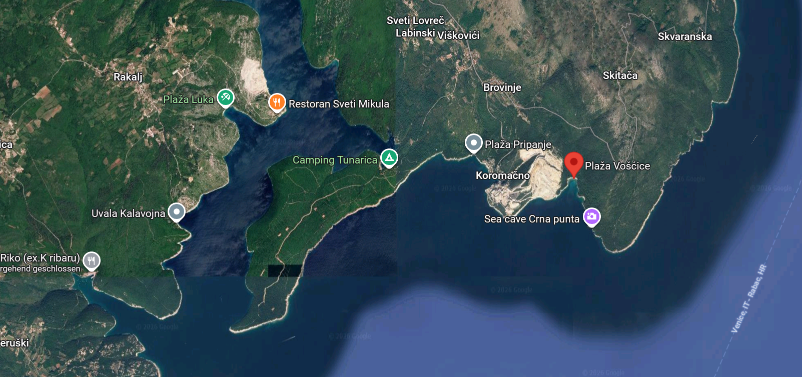

1. Lexington, Kentucky: „Tech-miliarderi nisu glasači"
Krizna točka resursnog imperijalizma umjetne inteligencije
Lokalna zajednica u Lexingtonu (Fayette County) postala je simbol globalnog otpora širenju AI data-centara. Nakon što je vijeće razmatralo moratorij na nove gradnje, građani su zatražili da se projekti zamrznu dok se ne procijeni utjecaj na mrežu, vodne resurse i cijene struje. izvor: lokalni zapisnici
Višestruka potrošnja
AI upit troši red veličina više energije od klasične pretrage, ovisno o modelu. raspon sporan
Hlađenje servera
Data-centri troše milijune litara pitke vode dnevno u regijama koje se suočavaju sa sušom. više studija
Pritisak na cijene
Studija Federal Reserve Bank of Dallas pokazuje vezu između rasta data-centara i rasta cijena struje. Dallas Fed
2. Europski brandherdi: 70+ projektnih zaustavljanja
Od Dublina do Frankfurta: građani povlače ručnu kočnicu
🇫🇷 Francuska — Étrechet
Googleov projekt data-centra u Étrechetu izazvao je val lokalnih ostavki. Dio vijećnika i gradonačelnica napustili su funkcije zbog načina na koji je projekt proguran bez stvarne lokalne rasprave. francuski tisak
🇮🇪 Irska & 🏴 Škotska
Prema podacima irskog CSO-a, data-centri u Irskoj troše više električne energije nego sva kućanstva zajedno. Škotski parlament raspravljao je o moratoriju na nove projekte. CSO.statistics
3. Slučaj Holcim: KOdeCO Net Zero u Istri
Globalna dvoličnost, EU subvencije i masovni narodni bunt
Kad Istra kaže: dosta!
Dok Holcim projekt u Koromačnu prodaje kao „poklon svjetskoj klimi" uz potporu EU Innovation Fund, stvarnost uključuje spaljivanje otpada (iz Kaštijuna, Pazina, Gospića) i zabrinutost zbog emisija. CINEA baza
- ● 14.10.2026. — Preko 7.100 građana predalo službenu peticiju općini Raša.
- ● 15.10.2026. — Općinsko vijeće Raše glasalo protiv projekta i zatražilo uklanjanje sa strateške liste.
Otpad u Gospiću — otvoreno pitanje
Dolazak talijanskog otpada u Gospić kroz sumnjive tvrtke otvorio je pitanja o lancu zbrinjavanja opasnog otpada. TVRDNJA ZAHTIJEVA SUDSKI IZVOR
⚠️ Napomena urednika: ova tvrdnja trenutno nema javno dostupan sudski ili istražni dokument. Do objave takvog dokumenta, tretiramo je kao istražnu hipotezu, ne kao dokaz.
Prostorni i vizualni pregled ugroženosti
Crkva, kamenolom i plaža – sukob industrije i prirode
Crkva sv. Ivana Krstitelja i Industrijska Zona
Simbol kulturne baštine smješten neposredno iznad ruba kopopa, s panoramskim pogledom na prostor pogođen eksploatacijom.
Otvori lokaciju na karti
Kamenolom & Kopop
Satelitski prikaz masivnog industrijskog zahvata neposredno uz morsku obalu. Prikazani su razmjeri eksploatacije i pritisak na prirodni okoliš.

Crkva sv. Ivana Krstitelja
Kulturna i povijesna baština smještena na samom rubu kopopa. Lokacija pruža izravan uvid u prostornu stisnutost između industrije i tradicije.

Plaža i Uvala Vošćice
Očuvana prirodna uvala iznimne bioraznolikosti koja se nalazi u neposrednoj blizini industrijske zone te trpi kontinuirani ekološki rizik.
4. Forenzika: dosje „Koromačno"
Kako otvoreni podaci i kriptografski potpisi čuvaju integritet dokaza
Matematički nemoguće emisije
Službeni portal zrak.infomedica.hr (NZJZ Splitsko-dalmatinske županije) u realnom vremenu prikazuje negativne koncentracije dušikovog monoksida (NO) i dušikovih oksida (NOx).
- >> NO (Dušikov monoksid): -1.622 µg/m³
- >> NOx (Dušikovi oksidi): -0.765 µg/m³
- >> Indeks kvalitete: 1 (Vrlo dobra)
Sustav istovremeno prikazuje ocjenu "Vrlo dobra", ignorirajući fizički nemoguće podatke. Na dnu stranice stoji ograda: "Podaci u stvarnom vremenu su nevalidirani...". Ovo otvara pitanje kako se kalibriraju senzori i tko kontrolira "peglanje" podataka prije službenih izvještaja.
SHA256 potpisi
Dokumenti i mjerne tablice digitalno su „zamrznuti" hash vrijednostima — svaka naknadna izmjena postaje vidljiva.
Senzorska analiza
Forenzički pregled zapisa o kvaliteti zraka pokazuje statistički sumnjive vrijednosti koje zahtijevaju neovisnu verifikaciju. u provjeri
Sukob interesa
Povezane tvrtke uključene su u više faza lanca: nabavu, dozvole i kontrolu parametara. sudski registar
5. Metodologija i standardi provjere
Kako razlikujemo dokaz od hipoteze
Tri razine tvrdnji u ovom dosjeu:
- DOKAZ Primarni dokument, službeni zapis, sudska odluka ili objavljeni podaci institucije — s linkom na izvor.
- TVRDNJA Medijski izvor ili izjava aktera — vjerodostojno, ali nije isto što i dokaz. Označeno žutim.
- HIPOTEZA Otvoreno pitanje bez javno dostupnog dokumenta. Označeno crvenim, uz eksplicitnu napomenu.
Ako pronađete grešku ili imate dokument koji mijenja sliku — javite se. Dosje se ažurira.
6. Izvori i korisni linkovi
Provjeri primarne dokumente sam